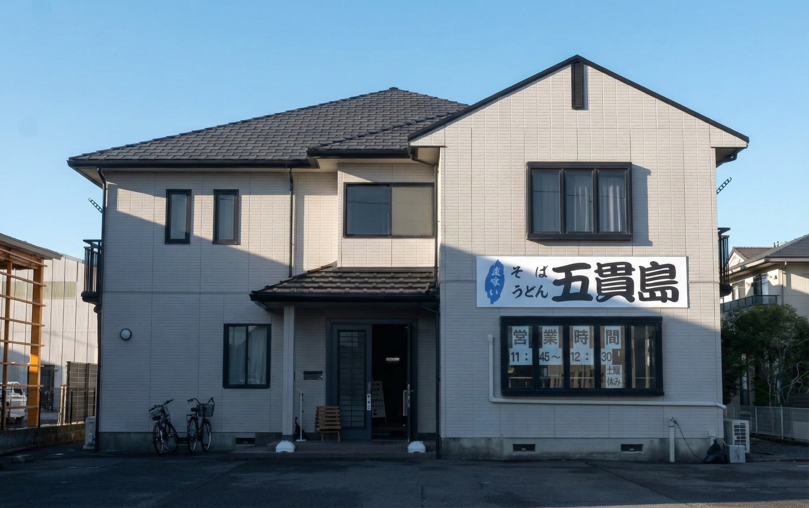
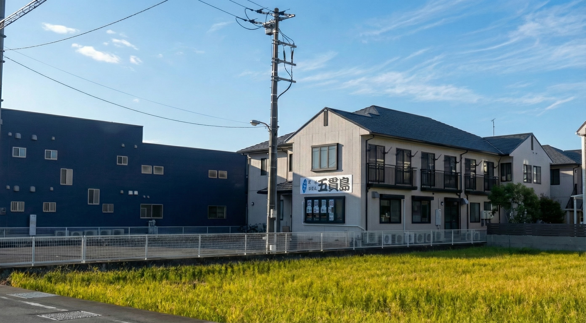
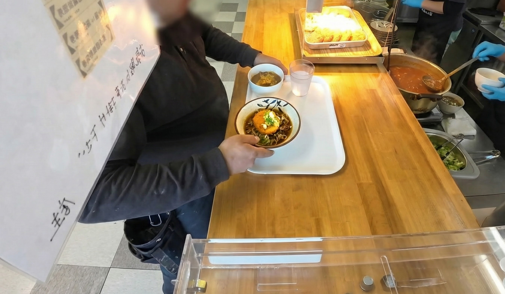
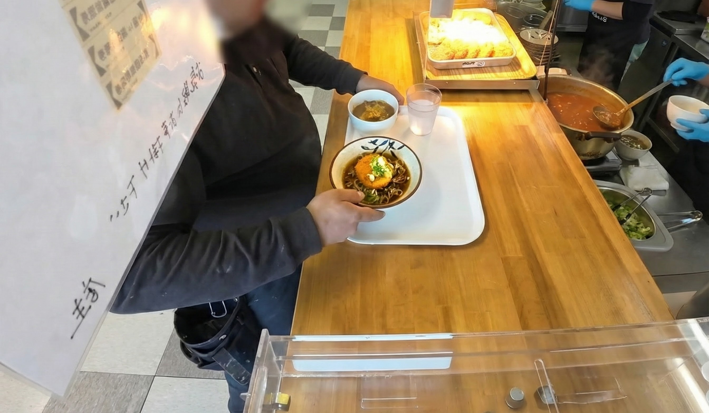
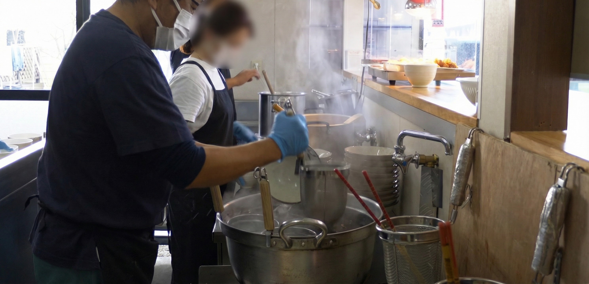
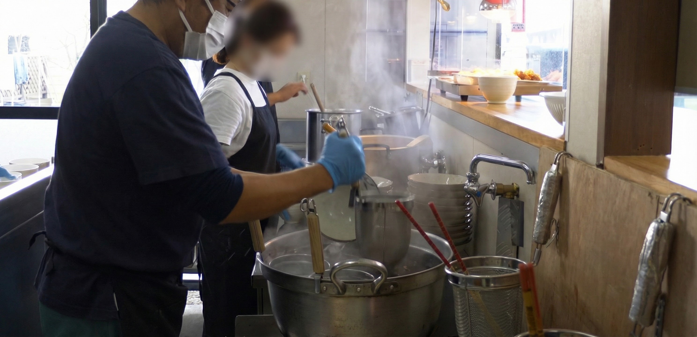

01. 外観（ここです）。
まず「ここに入ってOK」がわかる。


正面／右側
平日45分だけ開く、立ち喰いそば・うどん。
来店前の不安をなくすために、必要な情報だけを正確にまとめました。
※営業日は祝日などで変わる場合があります（最終判断は店頭掲示）
献立
定番 ¥500 / 日替わり ¥600
追加トッピングは別料金（合計は注文内容で変動）
お会計
料金は自己申告で
料金箱へ
1,000円札は両替機へ
営業時間は店頭掲示が基準です
はじめての方が「入っていいのか」「どこで払うのか」で迷わないための公式案内です。
まず「ここに入ってOK」がわかる。
車で来る方が迷わない。
厚生棟内のため、入口で履き替えます。
現金のみ。1,000円札は両替機へ。
雰囲気がわかると、初めてでも安心です。

「働く人の昼を支える場所」——それが伝わる一枚。
盛らない。実物に忠実に。
かけ（そば・うどん）＋ おにぎり2個
¥500
税込
内容
かけ（そば・うどん）＋おにぎり2個
※定番セットの写真は準備中です。実物と違う写真は掲載しません。
「正確に伝える」を優先します
かけ（そば・うどん）＋ 本日のミニ丼
※写真は撮影日の一例です。内容は日替わりで変わります。
¥600
税込

日替わり内容は店頭掲示が基準。
Instagramでも確認できます。
追加トッピングは別料金（合計は注文内容で変動）
説明は短く。写真は誠実に。
※内容・組み合わせは注文で変わります
 

 

追加トッピング（例）：小えびかきあげ ¥200 / コロッケ・メンチ ¥100 / 生たまご ¥100 （合計は注文内容で変動）
手抜きではありません。必要なところに全部を込めるための形です。
待たせません。短い昼休みに合わせます。
自己申告・料金箱。現金のみです。
ちゃんとうまい一杯を出します。
厚生棟内のため、スリッパに履き替えます。
住所
静岡県富士市五貫島 863-1
株式会社アルファプラス 本社敷地内 厚生棟
駐車場
敷地内駐車場あり
お願い
現金のみ / 全席禁煙
※工場敷地内のため、はじめての方は「外観・駐車場・入口」の写真を参考にしてください。
※営業は平日のみ（11:45–12:30 / LO 12:15）。
「短い昼休みに、ちゃんとした一杯を。」
店頭掲示とあわせて、最新を確認できます。